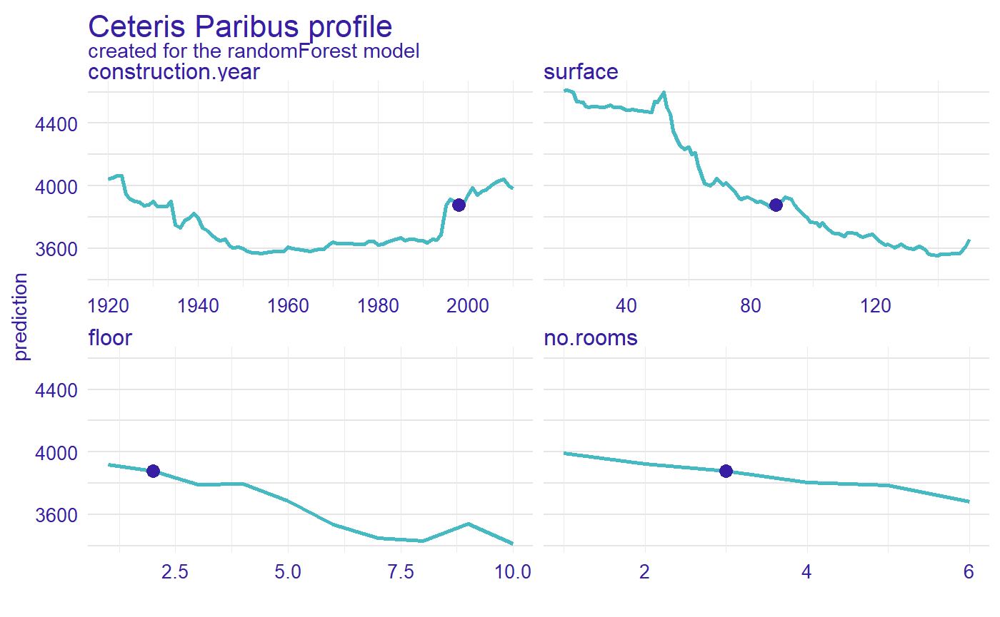
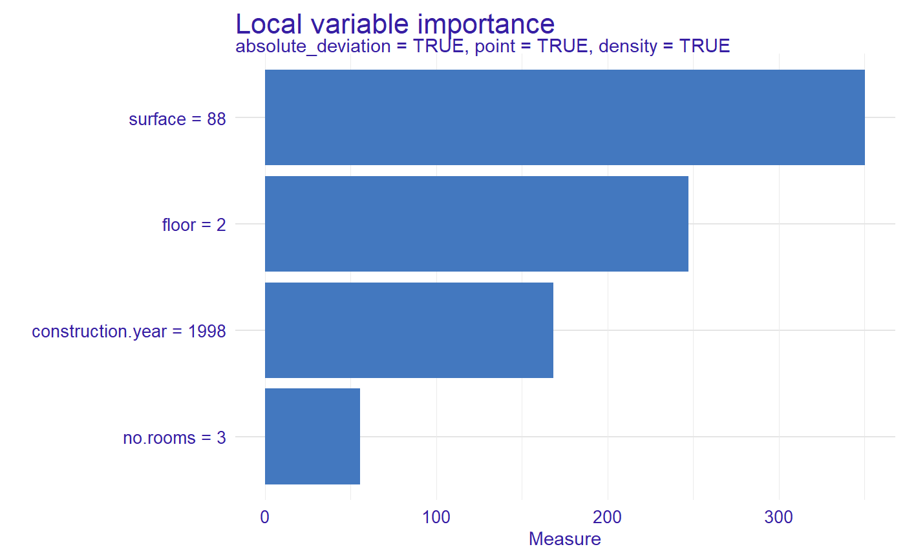
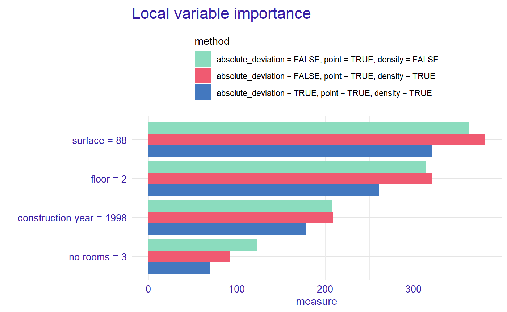
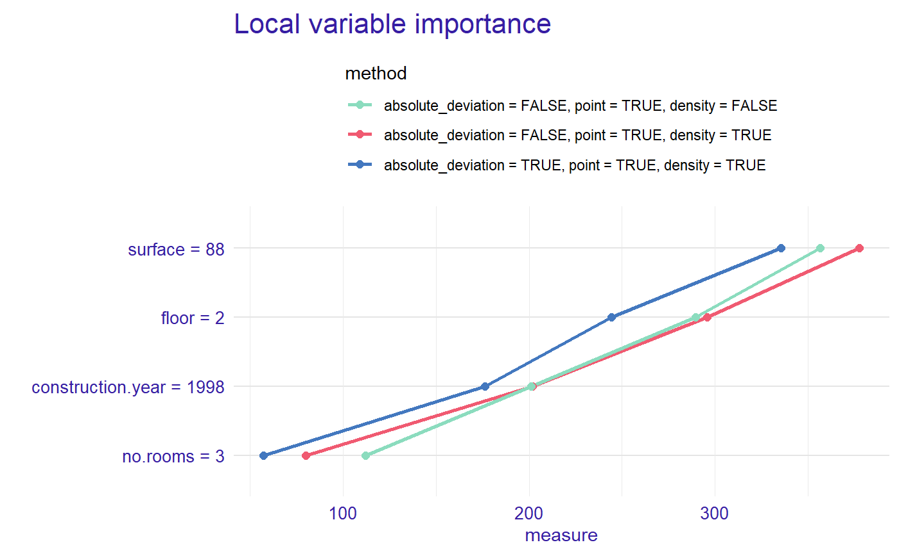
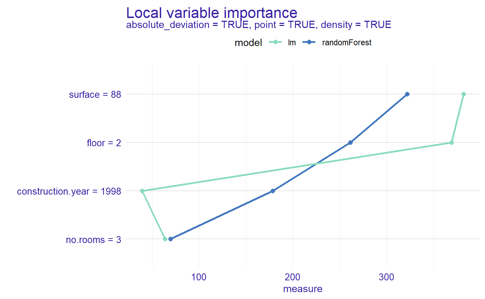

vignettes/vignette_apartments_local.Rmd
vignette_apartments_local.RmdIn this vignette, we present a local variable importance measure based on Ceteris Paribus profiles for random forest regression model.
We work on Apartments dataset from DALEX package.
#> m2.price construction.year surface floor no.rooms district
#> 1 5897 1953 25 3 1 Srodmiescie
#> 2 1818 1992 143 9 5 Bielany
#> 3 3643 1937 56 1 2 Praga
#> 4 3517 1995 93 7 3 Ochota
#> 5 3013 1992 144 6 5 Mokotow
#> 6 5795 1926 61 6 2 SrodmiescieNow, we define a random forest regression model and use explain from DALEX.
library("randomForest") apartments_rf_model <- randomForest(m2.price ~ construction.year + surface + floor + no.rooms, data = apartments) explainer_rf <- explain(apartments_rf_model, data = apartmentsTest[,2:5], y = apartmentsTest$m2.price) #> Preparation of a new explainer is initiated #> -> model label : randomForest ( [33m default [39m ) #> -> data : 9000 rows 4 cols #> -> target variable : 9000 values #> -> predict function : yhat.randomForest will be used ( [33m default [39m ) #> -> predicted values : numerical, min = 2102.226 , mean = 3515.165 , max = 5345.8 #> -> model_info : package randomForest , ver. 4.6.14 , task regression ( [33m default [39m ) #> -> residual function : difference between y and yhat ( [33m default [39m ) #> -> residuals : numerical, min = -1279.39 , mean = -3.641524 , max = 2132.567 #> [32m A new explainer has been created! [39m
We need to specify an observation. Let consider a new apartment with the following attributes. Moreover, we calculate predict value for this new observation.
new_apartment <- data.frame(construction.year = 1998, surface = 88, floor = 2L, no.rooms = 3) predict(apartments_rf_model, new_apartment) #> 1 #> 3881.725
Let see the Ceteris Paribus Plots calculated with DALEX::predict_profile() function. The CP also can be calculated with DALEX::individual_profile() or ingredients::ceteris_paribus().
library("ingredients") profiles <- predict_profile(explainer_rf, new_apartment) plot(profiles) + show_observations(profiles)

Now, we calculated a measure of local variable importance via oscillation based on Ceteris Paribus profiles. We use variant with all parameters equals to TRUE.
library("vivo") measure <- local_variable_importance(profiles, apartments[,2:5], absolute_deviation = TRUE, point = TRUE, density = TRUE)
plot(measure)

For the new observation the most important variable is surface, then floor, construction.year and no.rooms.
We calculated local variable importance for different parameters and we can plot together, on bar plot or lines plot.
measure_2 <- local_variable_importance(profiles, apartments[,2:5], absolute_deviation = FALSE, point = TRUE, density = TRUE) measure_3 <- local_variable_importance(profiles, apartments[,2:5], absolute_deviation = FALSE, point = TRUE, density = FALSE)
plot(measure, measure_2, measure_3, color = "_label_method_")

plot(measure, measure_2, measure_3, color = "_label_method_", type = "lines")

Let created a linear regression model and explain object.
apartments_lm_model <- lm(m2.price ~ construction.year + surface + floor + no.rooms, data = apartments) explainer_lm <- explain(apartments_lm_model, data = apartmentsTest[,2:5], y = apartmentsTest$m2.price) #> Preparation of a new explainer is initiated #> -> model label : lm ( [33m default [39m ) #> -> data : 9000 rows 4 cols #> -> target variable : 9000 values #> -> predict function : yhat.lm will be used ( [33m default [39m ) #> -> predicted values : numerical, min = 2231.8 , mean = 3507.346 , max = 4769.053 #> -> model_info : package stats , ver. 3.6.3 , task regression ( [33m default [39m ) #> -> residual function : difference between y and yhat ( [33m default [39m ) #> -> residuals : numerical, min = -733.2516 , mean = 4.177813 , max = 2107.979 #> [32m A new explainer has been created! [39m
We calculated Ceteris Paribus profiles and measure.
profiles_lm <- predict_profile(explainer_lm, new_apartment) measure_lm <- local_variable_importance(profiles_lm, apartments[,2:5], absolute_deviation = TRUE, point = TRUE, density = TRUE)
plot(measure, measure_lm, color = "_label_model_", type = "lines")

Now we can see the order of importance of variables by model for selected observation.